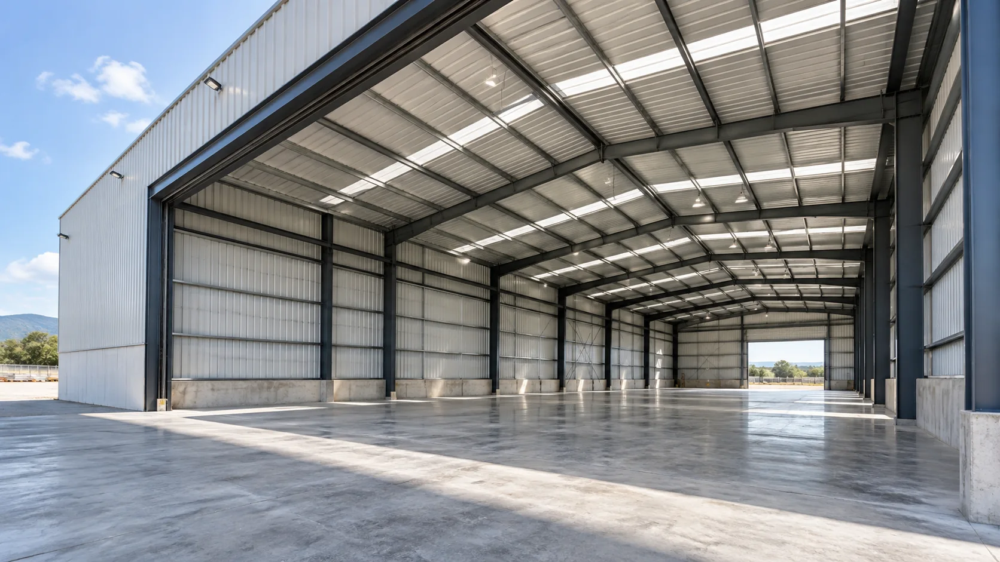
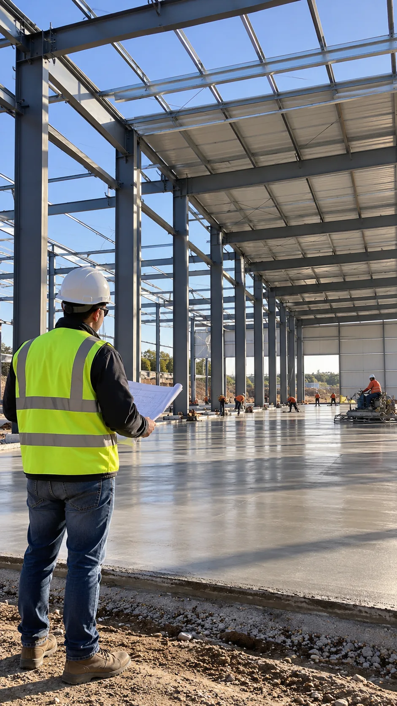
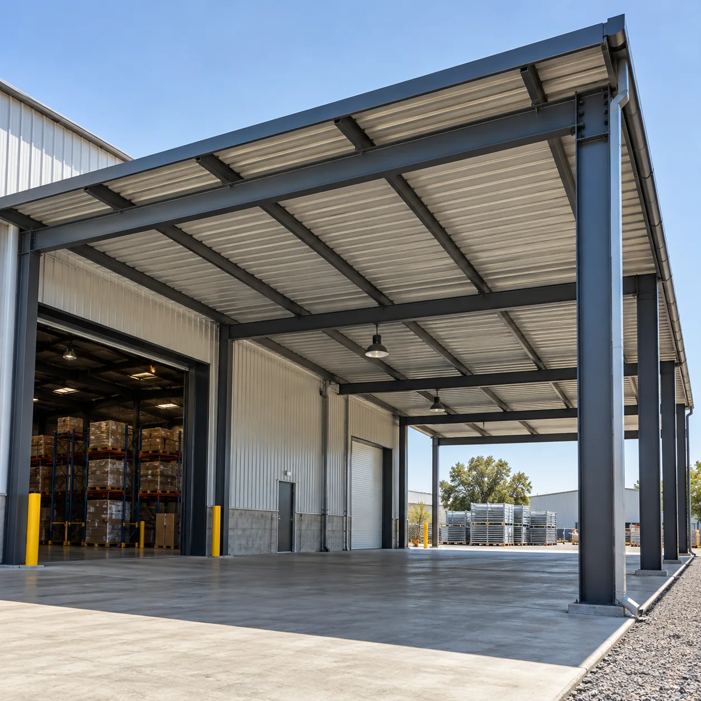
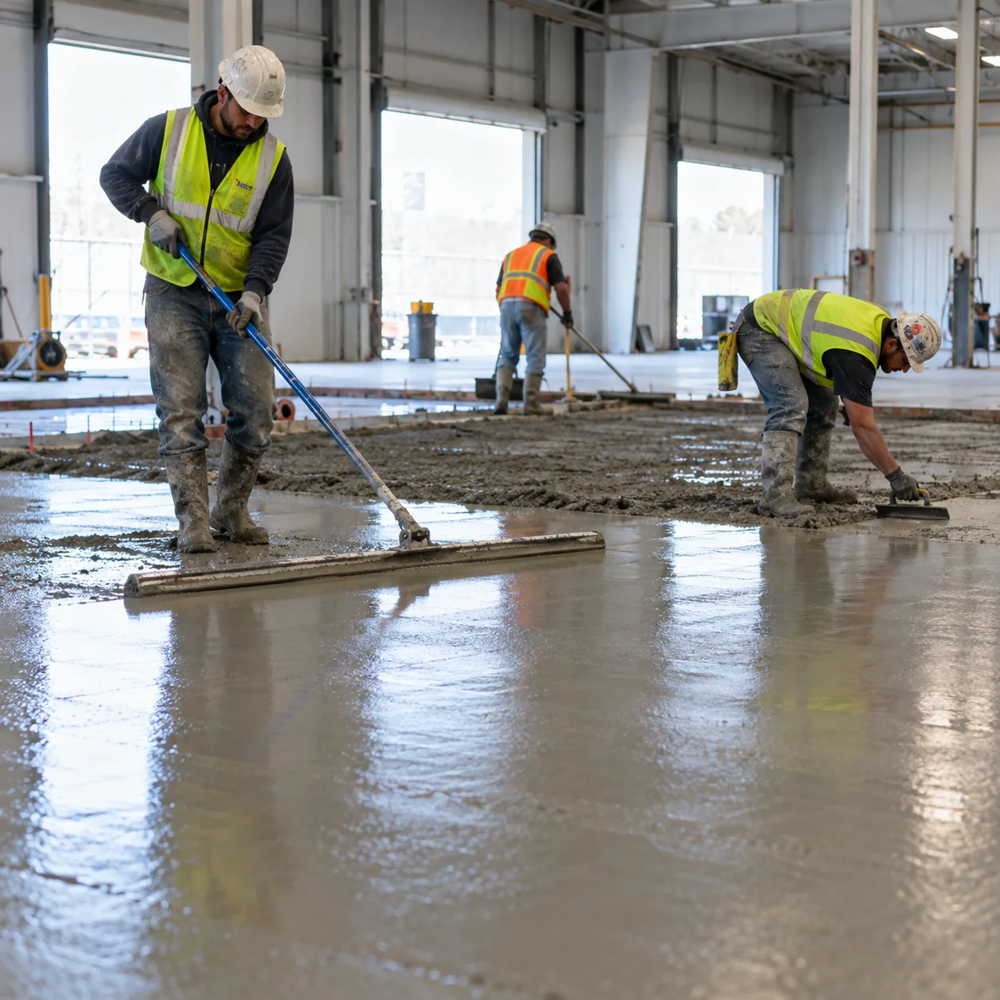
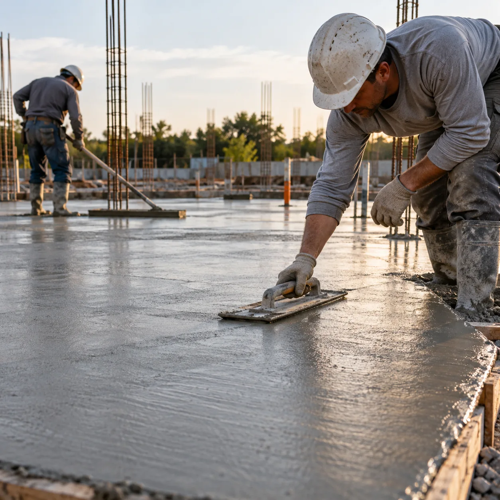
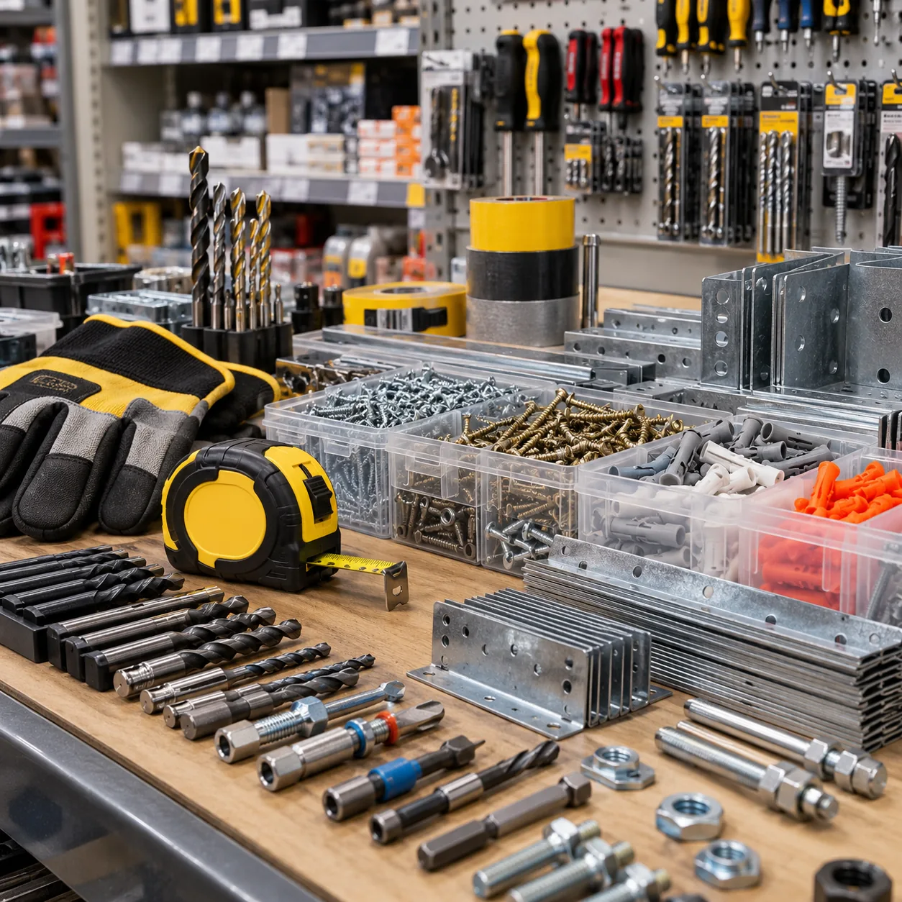

01 / 05
Galpones y naves
Construcción de espacios cubiertos para actividades productivas, de guardado y operación.
Ver servicio
Construimos galpones, naves, tinglados, pisos y plateas de hormigón. También ofrecemos artículos de ferretería.

Estructura / obra civil22Ac constructora se dedica a obras civiles. Realiza galpones, naves, tinglados, pisos y plateas de hormigón. También vende artículos de ferretería.
Contanos qué tipo de proyecto tenés en mente y conversemos sobre el trabajo que necesitás.
Conocé la constructoraDesde estructuras cubiertas hasta superficies de hormigón y artículos de ferretería.
Construcción de espacios cubiertos para actividades productivas, de guardado y operación.
Ver servicio
Estructuras cubiertas para ampliar, proteger o dar forma a nuevos espacios de trabajo.
Ver servicio

Bases de hormigón para proyectos que comienzan desde el suelo.
Ver servicio
Venta de artículos de ferretería. Consultanos por los productos que necesitás.
Ver servicioGalpones, naves, tinglados, pisos, plateas o artículos de ferretería: escribinos y contanos tu consulta.